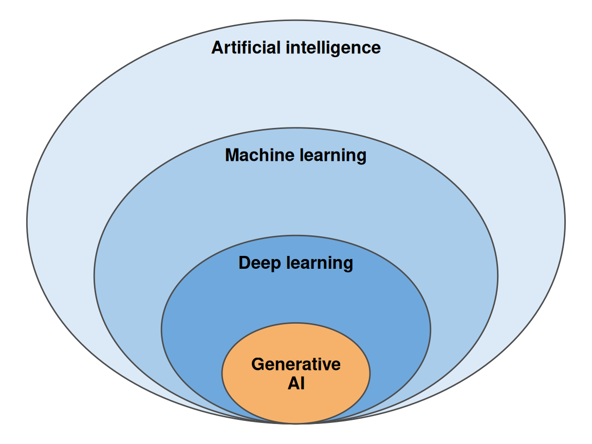
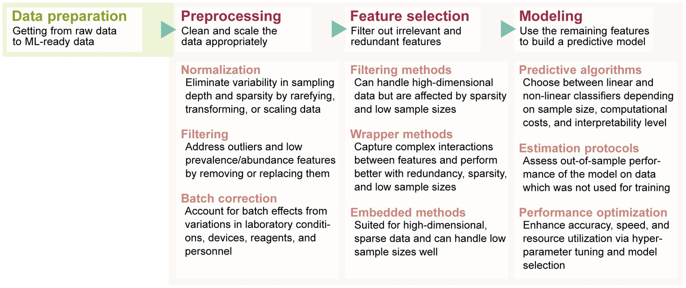

Introduction
Machine learning (ML) refers to computational methods that learn patterns from data instead of following rules that are explicitly programmed. In microbiome research, ML is used, for example, to predict host phenotypes such as disease status from abundance profiles, to find groups of similar samples, and to identify features that are associated with an outcome.
ML is one part of the broader field of artificial intelligence (AI). The terms AI, ML, and deep learning are often used interchangeably, but they form a nested hierarchy (Figure 1).
Artificial intelligence (AI) is the broad field of building computer systems that perform tasks that usually require human intelligence, such as reasoning, recognizing patterns, or making decisions.
Machine learning (ML) is a subfield of AI in which models learn from data. Methods such as random forest, gradient boosting, and clustering belong to this category.
Deep learning (DL) is a subfield of ML that uses neural networks with many layers. Deep learning models can learn complex patterns, but they usually require large amounts of training data.
Generative AI refers to deep learning models that generate new content, such as text, images, or sequences. Large language models (LLMs) are an example.
Nowadays, the term “AI” is commonly used to refer to generative AI in general, for example, chatbots that are based on LLMs. Increasingly, it also refers to AI agents, which are systems that use generative models to plan and carry out tasks with some autonomy, such as writing and running code. In the scientific literature, however, AI covers a much wider range of methods, including classical ML.
Microbiome datasets are often small in sample size but high-dimensional, sparse, and they are typically stored as tables. For data like this, classical ML methods, such as random forest, often perform as well as or better than deep learning, and they are easier to train and interpret. Therefore, the chapters in this part focus on classical ML.
ML methods are commonly divided into two groups:
Unsupervised learning discovers patterns and structures in the data without a known outcome. Common tasks are dimensionality reduction and clustering.
Supervised learning trains a model on observations with a known outcome, such as patient status, and then predicts the outcome for new observations. Common tasks are classification and regression.
A supervised ML analysis typically proceeds from data preparation through preprocessing and feature selection to model building and evaluation (Figure 2). Each stage involves choices that affect the results; Papoutsoglou et al. (2023) discuss these choices and best practices for microbiome data.

Papoutsoglou, Georgios, Sonia Tarazona, Marta B. Lopes, et al. 2023. “Machine Learning Approaches in Microbiome Research: Challenges and Best Practices.” Frontiers in Microbiology 14. https://doi.org/10.3389/fmicb.2023.1261889.
For more details, see the following chapters:
- Unsupervised learning: OMA: Community similarity and OMA: Community typing
- Supervised learning: 7 Machine learning
- ML in multi-omics data integration: OMA: Multi-omics ordination and OMA: Supervised integration